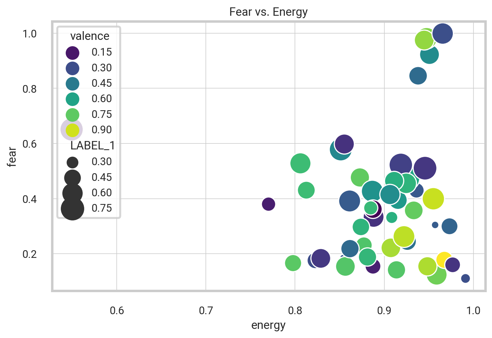
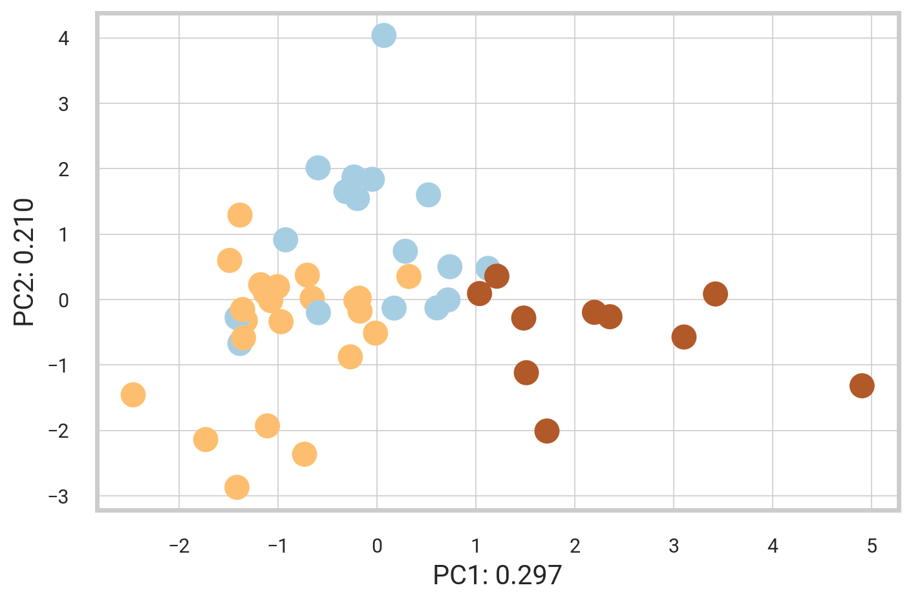
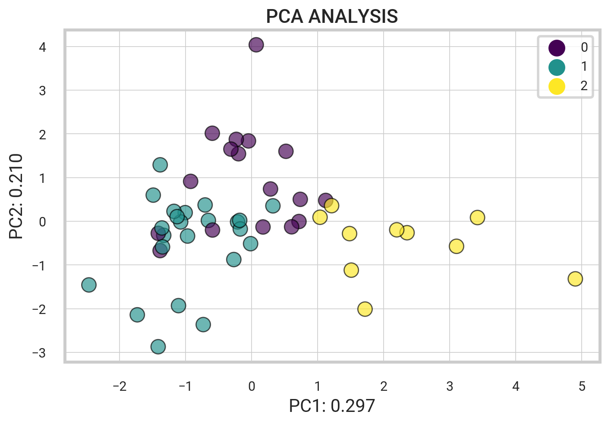

import spotipy
from spotipy.oauth2 import SpotifyClientCredentials
import pandas as pd
from IPython.core.display import HTML
client_id = "xxx"
client_secret = "xxx"NLP Song Lyrics
Spotify API
Goal. Using machine learning to predict the mood of music from song lyrics and audio features.
The following project uses Python implementation that extracts and analyzes information about songs in a Spotify playlist using the Spotify Web API. We then use the lyricsgenius package to search for and save the lyrics of specific songs from the Genius lyrics website. We then implement a Python script that contains several functions for cleaning song lyrics and determining the sentiment of the lyrics.
In summary, the code retrieves and cleans song lyrics, removes stopwords and performs lemmatization, and finally determines the sentiment of the lyrics using pre-trained models for sentiment analysis.
To access data from Spotify, we need to import the spotipy library and the SpotifyClientCredentials module. Additionally, we will be utilizing the pandas and IPython packages for data manipulation and display. In order to authenticate our access to the Spotify API, we must provide our client ID and client secret. Once authenticated, we can use the spotipy module to interact with the Spotify API and retrieve data.
sp = spotipy.Spotify(auth_manager=SpotifyClientCredentials(client_id, client_secret))Display Spotify Playlists
Let’s take a look at the popular Spotify playlists. Below, the code retrieves a range of Spotify playlists and generates a dataframe that contains various details about each playlist, such as its name, ID, description, thumbnail image, and total number of tracks. The resulting dataframe is displayed as an HTML table, which features thumbnail images for every playlist.
username = "spotify"
my_playlists = sp.user_playlists(username)| thumbnail | playlist_name | playlist_id | description | total | |
|---|---|---|---|---|---|
| 0 | Today's Top Hits | 37i9dQZF1DXcBWIGoYBM5M | Travis Scott is on top of the Hottest 50! | 50 | |
| 1 | RapCaviar | 37i9dQZF1DX0XUsuxWHRQd | Music from Travis Scott, Drake and Latto. | 50 | |
| 2 | Hot Country | 37i9dQZF1DX1lVhptIYRda | Today's top country hits. Cover: Brett Young | 50 | |
| 3 | Viva Latino | 37i9dQZF1DX10zKzsJ2jva | Today's top Latin hits, elevando nuestra música. Cover: Grupo Frontera & Grupo Firme | 50 | |
| 4 | New Music Friday | 37i9dQZF1DX4JAvHpjipBk | New music from Doja Cat, Lil Yachty, Bebe Rexha & David Guetta, Feid, Halle, Cordae and more! | 100 |
Get Tracks from Playlist
This code uses Spotify’s API to extract various details about songs from a given playlist. It obtains metadata such as track name, album name, and release date, as well as track features like danceability and tempo. Additionally, it collects data on the artist’s genre and popularity. Once the data has been extracted, it is organized and presented in a Pandas DataFrame for easy viewing.
# Get playlist song features and artist info
def playlist_features(id, artist_id, playlist_id):
# Create Spotify API client variables
meta = sp.track(id)
audio_features = sp.audio_features(id)
artist_info = sp.artist(artist_id)
playlist_info = sp.playlist(playlist_id)
# Metadata
name = meta['name']
track_id = meta['id']
album = meta['album']['name']
artist = meta['album']['artists'][0]['name']
artist_id = meta['album']['artists'][0]['id']
release_date = meta['album']['release_date']
length = meta['duration_ms']
popularity = meta['popularity']
# Main artist name, popularity, genre
artist_pop = artist_info["popularity"]
artist_genres = artist_info["genres"]
# Track features
acousticness = audio_features[0]['acousticness']
danceability = audio_features[0]['danceability']
energy = audio_features[0]['energy']
instrumentalness = audio_features[0]['instrumentalness']
liveness = audio_features[0]['liveness']
loudness = audio_features[0]['loudness']
speechiness = audio_features[0]['speechiness']
tempo = audio_features[0]['tempo']
valence = audio_features[0]['valence']
key = audio_features[0]['key']
mode = audio_features[0]['mode']
time_signature = audio_features[0]['time_signature']
# Basic playlist info
playlist_name = playlist_info['name']
return [name, track_id, album, artist, artist_id, release_date, length, popularity,
artist_pop, artist_genres, acousticness, danceability,
energy, instrumentalness, liveness, loudness, speechiness,
tempo, valence, key, mode, time_signature, playlist_name]def get_playlist_tracks(playlist_URI):
tracks = []
results = sp.playlist_tracks(playlist_URI)
tracks = results["items"]
while results["next"]:
results = sp.next(results)
tracks.extend(results["items"])
return tracksTo analyze a particular playlist, simply copy the URL from the Spotify Player interface and input it into the following code. The get_playlist_tracks method retrieves a comprehensive list of track IDs and their corresponding artists from the selected playlist.
# Spotify playlist url
playlist_ids = []
track_ids = []
artist_uris = []
# Extract song ids and artists from playlist
playlist_URI = "37i9dQZF1DXcBWIGoYBM5M"
for i in get_playlist_tracks(playlist_URI):
track_ids.append(i["track"]["id"])
artist_uris.append(i["track"]["artists"][0]["uri"])
playlist_ids.append(playlist_URI)With the above code, it is possible to seamlessly gather essential information regarding songs and artists from any Spotify playlist identified by its URI. This process enables the extraction of data such as track IDs, artist URIs, and playlist IDs.
To extract further information about the songs, the code below iterates through each track ID in the playlist and utilizes the function we previously created. From there, we create a Pandas dataframe by passing in the extracted information and providing the desired column header names.
# Loop over track ids
all_tracks = [
playlist_features(track_ids[i], artist_uris[i], playlist_ids[i])
for i in range(len(track_ids))
]| name | artist | release_date | popularity | artist_pop | artist_genres | acousticness | danceability | energy | instrumentalness | liveness | loudness | speechiness | tempo | valence | playlist | |
|---|---|---|---|---|---|---|---|---|---|---|---|---|---|---|---|---|
| 0 | MELTDOWN (feat. Drake) | Travis Scott | 2023-07-28 | 93 | 94 | [hip hop, rap, slap house] | 0.0120 | 0.557 | 0.7740 | 0.000000 | 0.396 | -5.275 | 0.3510 | 111.975 | 0.397 | Today's Top Hits |
| 1 | Barbie World (with Aqua) [From Barbie The Album] | Nicki Minaj | 2023-06-23 | 95 | 86 | [hip pop, pop, queens hip hop, rap] | 0.5190 | 0.770 | 0.5800 | 0.000127 | 0.233 | -8.393 | 0.2470 | 144.072 | 0.753 | Today's Top Hits |
| 2 | Cruel Summer | Taylor Swift | 2019-08-23 | 99 | 100 | [pop] | 0.1170 | 0.552 | 0.7020 | 0.000021 | 0.105 | -5.707 | 0.1570 | 169.994 | 0.564 | Today's Top Hits |
| 3 | What Was I Made For? [From The Motion Picture ... | Billie Eilish | 2023-07-13 | 97 | 87 | [art pop, electropop, pop] | 0.9590 | 0.444 | 0.0911 | 0.000001 | 0.098 | -17.665 | 0.0307 | 78.403 | 0.142 | Today's Top Hits |
| 4 | Dance The Night (From Barbie The Album) | Dua Lipa | 2023-05-25 | 97 | 86 | [dance pop, pop, uk pop] | 0.0207 | 0.671 | 0.8450 | 0.000000 | 0.329 | -4.930 | 0.0480 | 110.056 | 0.775 | Today's Top Hits |
| 5 | vampire | Olivia Rodrigo | 2023-06-30 | 98 | 84 | [pop] | 0.1690 | 0.511 | 0.5320 | 0.000000 | 0.311 | -5.745 | 0.0560 | 137.827 | 0.322 | Today's Top Hits |
Top Artist Genres
The following code segment generates a dictionary that contains the frequency of artist genres, which is then converted into a dataframe sorted by frequency. The code accomplishes this by tallying the number of occurrences of each genre in a list called artist_genres. The count is performed using a dictionary named genres_dict, and the resulting tallies are stored in a dataframe named df_genres, which exhibits the genres and the number of times they occur.
genres_dict = {}
for x in df.artist_genres:
for ii in x:
if ii in genres_dict:
genres_dict[ii] += 1
else:
genres_dict[ii] = 1
print(genres_dict)
# Convert Dictionary to Dataframe
df_genres = pd.DataFrame(genres_dict.items(), columns=['Genre', 'Freq']).sort_values('Freq', ascending=False)
df_genres = df_genres.reset_index(drop = True){'hip hop': 5, 'rap': 11, 'slap house': 2, 'hip pop': 1, 'pop': 24, 'queens hip hop': 1, 'art pop': 2, 'electropop': 1, 'dance pop': 5, 'uk pop': 2, 'dfw rap': 2, 'melodic rap': 3, 'k-pop': 2, 'k-pop girl group': 2, 'canadian contemporary r&b': 2, 'canadian pop': 2, 'electra': 1, 'float house': 1, 'afrobeats': 2, 'nigerian pop': 1, 'reggaeton': 2, 'trap latino': 3, 'urbano latino': 3, 'atl hip hop': 1, 'trap': 2, 'rap canario': 1, 'r&b': 3, 'bedroom pop': 2, 'gen z singer-songwriter': 3, 'singer-songwriter pop': 2, 'chicago drill': 1, 'chicago rap': 1, 'drill': 1, 'pop rap': 1, 'big room': 2, 'edm': 3, 'pop dance': 2, 'contemporary country': 2, 'country': 1, 'colombian pop': 1, 'alternative r&b': 1, 'piano rock': 1, 'australian pop': 1, 'viral pop': 1, 'uk hip hop': 1, 'electro house': 1, 'house': 1, 'progressive house': 1, 'uk dance': 1, 'bedroom r&b': 1, 'pov: indie': 1}
Genius API
The following Python script contains various functions optimized for efficiently cleaning song lyrics and determining their sentiment. To get started, the script below imports two fundamental libraries, lyricsgenius and BeautifulSoup. Next, through the initialization of the genius variable, one can access the Genius API and retrieve the lyrics of any given song, such as “Too Many Nights” by Metro Boomin.
import lyricsgenius
from bs4 import BeautifulSoup
genius = lyricsgenius.Genius("epFCxujgBe-Y6WrkZedI8kerKxiCpR6Rh0DAHYNlKDf9B4H1nXTdZIkj7krNUHVV")
song = genius.search_song("Too Many Nights", "Metro Boomin")
# song.save_lyrics()Searching for "Too Many Nights" by Metro Boomin...
Done.1. Regex and Profanity Filter
The function provided below is designed to efficiently fetch the lyrics of a song using the given track name and artist. Once the lyrics are retrieved, the function undergoes a comprehensive cleansing process to eliminate profanity, specific characters, and patterns that may hinder the overall readability. The resulting output is a list of cleaned lyrics with all non-ASCII characters removed.
import re
from profanity import profanity
from better_profanity import profanity as profanity2def clean_song_lyrics(song_name, song_artist):
song_genius = genius.search_song(song_name, song_artist)
clean_lyrics = song_genius.lyrics.partition('Lyrics')[2].lower()
clean_lyrics = profanity.censor(clean_lyrics) # censored_text
clean_lyrics = re.sub(r"[,\(\)\?\!\.\$\#\@\%]", "", clean_lyrics)
clean_lyrics = re.sub(r"[\[].*?[\]]", "", clean_lyrics)
clean_lyrics = re.sub(r"\d+embed", "", clean_lyrics)
clean_lyrics = re.sub(r'\"', '', clean_lyrics)
clean_lyrics = profanity2.censor(clean_lyrics) # censored_text
clean_lyrics = re.sub(r"[\*]", "", clean_lyrics)
clean_lyrics_decode = []
for i in (clean_lyrics.split()):
#encode() method
strencode = i.encode("ascii", "ignore")
#decode() method
strdecode = strencode.decode()
clean_lyrics_decode.append(strdecode)
return clean_lyrics_decode2. Removing Stop Words
The code below aims to eliminate stopwords from lyrics utilizing the NLTK library and its WordNetLemmatizer tool. This process allows for efficient lemmatization of words. The stopword list consists of frequently used English words and some contractions. Upon execution, the function returns a list of lemmatized words with the stopwords removed.
from nltk.corpus import stopwords
from nltk.stem import WordNetLemmatizerdef remove_stopwords_lyrics(clean_lyrics_decode):
stopword = stopwords.words('english')
stopword.extend(["i'm", "i'll", "'ll", "i'ma"])
removing_stopwords = [word for word in clean_lyrics_decode if word not in stopword]
wnl = WordNetLemmatizer()
return [wnl.lemmatize(word) for word in removing_stopwords] # lemmatized_word
NLP
Subsequently, the process involves the implementation of pipeline classes to carry out predictions using models accessible in the Hub. The code imports and employs multiple transformer models specifically designed for text classification and sentiment analysis. Specifically, the following procedure creates three distinct pipelines, each equipped with different models that facilitate the assessment of emotions and sentiment in textual content.
import transformers
from transformers import pipeline
#import tensorflow as tf
## python -m pip install "tensorflow<2.11"
# python -m pip install "protobuf<3.2"
classifier = pipeline("text-classification",model='bhadresh-savani/distilbert-base-uncased-emotion', return_all_scores=True)
classifier2 = pipeline("text-classification",model='cardiffnlp/twitter-roberta-base-sentiment', return_all_scores=True)
classifier3 = pipeline("sentiment-analysis", return_all_scores=True)The get_lyric_sentiment function takes in pre-processed lyrics as input and produces a dictionary of sentiment scores. It leverages three distinct classifiers to calculate the scores and aggregates them into a final result. For instance, one of these classifiers is the distilbert-base-uncased-emotion model, specifically trained to detect “emotions in texts such as sadness, joy, love, anger, fear, and surprise”.
def get_lyric_sentiment(cleaned_lyrics):
x = ' '.join(cleaned_lyrics)
prediction = classifier(x, truncation = True)
song_score = {j['label']: j['score'] for j in prediction[0]}
prediction2 = classifier2(x, truncation=True, max_length=512)
for k in prediction2[0]:
song_score[k['label']] = k['score']
prediction3 = classifier3(x, truncation=True)
for k3 in prediction3[0]:
song_score[k3['label']] = k3['score']
return song_scoreIf the lyric sequence contains more than 512 tokens, it will trigger an error message indicating an exception encountered in the ‘embeddings’ layer. However, we have implemented measures to properly manage lyric sequences that exceed 512 words in the function mentioned above.
Putting it All Together
To summarize, the code efficiently collects data and performs text analysis on every song in a playlist. Specifically, it systematically processes a list of tracks and corresponding artists while simultaneously conducting a thorough cleaning procedure on the lyrics. The cleaning process involves removing all nonessential characters, resulting in a more precise depiction of the song’s content. The outcome is a comprehensive frequency analysis of each word in a song’s lyrics, providing deeper insights into the overall conveyed message.
Additionally, the program computes a sentiment score for each song based on the lyrics, indicating whether the lyrics are positive, negative, or neutral. It also collects information about the song and artist, such as the release date, length, popularity, and genre. Finally, the program compiles all this information into a dataframe for further analysis.
lyrics_dict = {}
dict_ls = []
for i in range(len(df)):
song_name = df['name'][i].partition(' (')[0]
artist_name = df['artist'][i]
track_lyrics = clean_song_lyrics(song_name, artist_name)
track_lyrics = remove_stopwords_lyrics(track_lyrics)
for k in (track_lyrics):
if k in lyrics_dict:
lyrics_dict[k] += 1
else:
lyrics_dict[k] = 1
sent_score = get_lyric_sentiment(track_lyrics)
sent_score['track_name'] = song_name
sent_score['artist_name'] = artist_name
sent_score['release_date'] = df['release_date'][i]
sent_score['length'] = df['length'][i]
sent_score['popularity'] = df['popularity'][i]
sent_score['artist_pop'] = df['artist_pop'][i]
sent_score['artist_genres'] = df['artist_genres'][i]
sent_score['acousticness'] = df['acousticness'][i]
sent_score['danceability'] = df['danceability'][i]
sent_score['energy'] = df['energy'][i]
sent_score['instrumentalness'] = df['instrumentalness'][i]
sent_score['liveness'] = df['liveness'][i]
sent_score['loudness'] = df['loudness'][i]
sent_score['speechiness'] = df['speechiness'][i]
sent_score['tempo'] = df['tempo'][i]
sent_score['valence'] = df['valence'][i]
dict_ls.append(sent_score)| track_name | artist_name | release_date | length | popularity | artist_pop | artist_genres | acousticness | danceability | energy | ... | joy | love | anger | fear | surprise | LABEL_0 | LABEL_1 | LABEL_2 | NEGATIVE | POSITIVE | |
|---|---|---|---|---|---|---|---|---|---|---|---|---|---|---|---|---|---|---|---|---|---|
| 0 | MELTDOWN | Travis Scott | 2023-07-28 | 246133 | 93 | 94 | [hip hop, rap, slap house] | 0.012 | 0.557 | 0.774 | ... | 0.099130 | 0.003761 | 0.317456 | 0.511858 | 0.005745 | 0.300423 | 0.611931 | 0.087646 | 0.988340 | 0.011660 |
| 1 | Barbie World | Nicki Minaj | 2023-06-23 | 109750 | 95 | 86 | [hip pop, pop, queens hip hop, rap] | 0.519 | 0.770 | 0.580 | ... | 0.643529 | 0.011229 | 0.216599 | 0.051564 | 0.006760 | 0.304938 | 0.641082 | 0.053980 | 0.996903 | 0.003097 |
| 2 | Cruel Summer | Taylor Swift | 2019-08-23 | 178426 | 99 | 100 | [pop] | 0.117 | 0.552 | 0.702 | ... | 0.242494 | 0.017212 | 0.406428 | 0.024779 | 0.003659 | 0.286751 | 0.607994 | 0.105255 | 0.994165 | 0.005836 |
3 rows × 27 columns
In summary, the above code aims to collect and refine song lyrics by eliminating stopwords and conducting lemmatization. Subsequently, it employs pre-trained models for sentiment analysis to determine the prevailing emotion conveyed in the lyrics, providing valuable insights into the overall tone and message of the song.
Visualizing the Data
Our next step involves visually representing the distribution of different track features, such as song popularity. To achieve this, we generate a histogram using the powerful matplotlib and seaborn libraries. The figure includes an informative title and labels. We color the histogram with \(n\) bins to accurately represent the popularity distribution. Finally, we present the histogram using the plt.show() function.

Twitter-roBERTa-base for Sentiment Analysis
Now, we present a graphical representation of the results obtained from the roBERTa-base model “trained on roughly 58 million tweets and fine-tuned for sentiment analysis using the TweetEval benchmark” (EMNLP 2020). According to the TweetEval reference paper and official Github repository, the resulting labels 0, 1, and 2 correspond to Negative, Neutral, and Positive, respectively.
- Labels: 0 -> Negative; 1 -> Neutral; 2 -> Positive

This code above creates a histogram that displays the distribution of labels for a roBERTa-base model. The labels are categorized as negative, neutral, or positive, with each having its own distinct color. Additionally, the code adds a title to the figure and resizes the subplots to ensure a better fit. The final output is a graph that can be saved in png format for future reference.
Correlations Matrix
After completing the initial data analysis, we proceed with generating the Pearson correlations matrix using the Pandas command df.corr(). Subsequently, we visualize the matrix using the seaborn heatmap, providing a detailed understanding of the relationships between the various variables in our dataset.
track_sentiment_df = df_final[['track_name', 'artist_name',
'acousticness', 'danceability', 'energy', 'instrumentalness',
'loudness', 'speechiness', 'tempo', 'valence',
'sadness', 'joy', 'love', 'anger', 'fear', 'surprise',
'LABEL_0', 'LABEL_1', 'LABEL_2', 'NEGATIVE', 'POSITIVE']]
# Find the pearson correlations matrix
corr = track_sentiment_df.corr(method = 'pearson')
The code below produces a scatterplot that showcases the correlation between energy and fear. The x-axis represents the energy value, while the y-axis represents the fear sentiment. The size of each data point corresponds to the label indicating the neutral sentiment level, and its color represents the valence value. Moreover, each bubble contains its energy value within, allowing for a straightforward interpretation of the data.
Text(0.5, 1.0, 'Fear vs. Energy')
Similarly, the scatterplot presented above utilizes the track sentiment data, comparing the energy and fear levels of the tracks based on valence and size.
PCA Analysis
Next, we implement principal component analysis (PCA) on a comprehensive dataset comprising a range of musical features.
First, we create a table from the df_final dataframe by extracting specific columns that facilitate our analysis. These columns consist of acousticness, danceability, energy, speechiness, tempo, and valence of each track, as well as emotional features such as sadness, joy, love, anger, fear, and surprise. In addition, the table includes the track name and flags for both negative and positive sentiments.
We then perform PCA on the data in the table and apply it to generate a biplot depicting the relationship between the features and tracks. This biplot quickly reveals any discernible patterns and clusters within the dataset.
X_SMALL = df_final[['acousticness', 'danceability', 'energy', 'speechiness',
'tempo', 'valence', 'sadness', 'joy', 'love', 'anger',
'fear', 'surprise', 'track_name', 'NEGATIVE', 'POSITIVE']]To process the data, the code employs the PCA and StandardScaler modules from the sklearn decomposition and preprocessing libraries. Specifically, the \(X_i\) variable is used to choose the first 12 columns from the subset of data mentioned above, while the track_name column is chosen as the target variable. Next, the StandardScaler standardizes the \(X_i\) data.
PCA is applied to the standardized data, \(X_{st}\), using the PCA module, and the resulting loadings and eigenvalues are saved.
from sklearn.decomposition import PCA
from sklearn.preprocessing import StandardScaler
from bioinfokit.visuz import cluster
X_i = X_SMALL.iloc[:,0:12]
target = X_SMALL['track_name'].to_numpy()
X_st = StandardScaler().fit_transform(X_i)
pca_out = PCA().fit(X_st)
# component loadings
loadings = pca_out.components_
# get eigenvalues (variance explained by each PC)
pca_out.explained_variance_array([2.42868315e+00, 1.97781219e+00, 1.55851904e+00, 1.45953196e+00,
1.17526979e+00, 1.01150294e+00, 8.34197530e-01, 7.34088578e-01,
5.25035147e-01, 3.61992940e-01, 1.78264687e-01, 7.53325973e-15])Next, the following code uses the PCA() function to calculate the PCA scores of the standardized data set, \(X_{st}\).
A biplot is generated using the cluster module from the bioinfokit library. The biplot is based on the PCA scores and loadings, and the column names of the \(X_i\) data frame are used as labels for the plot. The variance explained by the first two principal components are also displayed on the plot.
# get biplot
pca_scores = PCA().fit_transform(X_st)
cluster.biplot(cscore=pca_scores, loadings=loadings, labels=X_i.columns.values,
var1=round(pca_out.explained_variance_ratio_[0]*100, 2),
var2=round(pca_out.explained_variance_ratio_[1]*100, 2), #colorlist=target,
show=True,dim=(10,5),dotsize=16)
Then, I assigned the resulting column names to the variable cols_pca using a list comprehension. Using the PCA scores, column names, and the original index from \(X_i\), I created a new pandas DataFrame called df_pca. The first three rows of this new DataFrame is shown below.
#pca = PCA()
pca_scores = PCA().fit_transform(X_st)
cols_pca = [f'PC{i}' for i in range(1, pca_out.n_components_+1)]
df_pca = pd.DataFrame(pca_scores, columns=cols_pca, index=X_i.index)| PC1 | PC2 | PC3 | PC4 | PC5 | PC6 | PC7 | PC8 | PC9 | PC10 | PC11 | PC12 | |
|---|---|---|---|---|---|---|---|---|---|---|---|---|
| 0 | -0.535483 | -0.410142 | 3.122397 | 1.787659 | 0.218412 | -0.198432 | -0.248253 | -0.182789 | -1.157658 | 2.407361 | 0.461934 | 3.073141e-08 |
| 1 | -0.546982 | -2.070879 | 0.668063 | 0.518742 | -0.248908 | 0.401758 | 1.479914 | 0.718626 | -0.787753 | 0.160845 | 0.629406 | 8.978113e-08 |
| 2 | -0.219304 | 0.431473 | 0.967675 | 1.625633 | -0.681383 | 0.550575 | 1.451084 | -0.577216 | 0.498632 | 0.402718 | -0.215591 | -1.777431e-07 |
The variance ratios for the PCA output and the cumulative sum of the explained variance ratios are printed below. Specifically, the array displayed represents the amount of variability explained by each component.
print(pca_out.explained_variance_ratio_)
print('----')
print(pca_out.explained_variance_ratio_.cumsum())[1.98342458e-01 1.61521329e-01 1.27279055e-01 1.19195110e-01
9.59803663e-02 8.26060732e-02 6.81261316e-02 5.99505672e-02
4.28778703e-02 2.95627568e-02 1.45582828e-02 6.15216211e-16]
----
[0.19834246 0.35986379 0.48714284 0.60633795 0.70231832 0.78492439
0.85305052 0.91300109 0.95587896 0.98544172 1. 1. ]The loading vectors help visualize the relationship between the original variables and their respective components. These vectors represent the weights of the variables within a mathematical equation used to generate the principal components.
df_weights = pd.DataFrame(pca_out.components_.T, columns=df_pca.columns, index=X_i.columns)
df_weights| PC1 | PC2 | PC3 | PC4 | PC5 | PC6 | PC7 | PC8 | PC9 | PC10 | PC11 | PC12 | |
|---|---|---|---|---|---|---|---|---|---|---|---|---|
| acousticness | 0.472636 | -0.163118 | -0.152968 | -0.143424 | 0.159508 | -0.196200 | 0.437121 | 0.282755 | -0.089136 | -0.126330 | 0.589212 | -1.749893e-08 |
| danceability | -0.354810 | -0.328431 | 0.232253 | -0.327776 | -0.051578 | 0.160395 | -0.167581 | 0.123379 | -0.202803 | -0.689654 | 0.128141 | -1.303748e-08 |
| energy | -0.484107 | 0.378877 | 0.072734 | -0.057181 | -0.001449 | -0.006525 | -0.076117 | -0.152562 | 0.258640 | 0.164176 | 0.700407 | -4.406446e-08 |
| speechiness | -0.143071 | -0.382968 | 0.417134 | 0.262851 | -0.141551 | 0.231333 | 0.161255 | 0.056990 | -0.473502 | 0.479736 | 0.180616 | 4.251967e-09 |
| tempo | -0.266491 | 0.187246 | -0.120239 | 0.377051 | 0.121832 | 0.168428 | 0.680987 | -0.293634 | -0.115783 | -0.345470 | -0.106610 | 3.143578e-08 |
| valence | -0.362598 | -0.254921 | -0.008339 | -0.294838 | 0.109331 | 0.071099 | 0.404934 | 0.423593 | 0.491052 | 0.242583 | -0.236960 | 3.997250e-09 |
| sadness | 0.115465 | 0.462237 | 0.141550 | -0.364070 | -0.446972 | 0.171583 | 0.215687 | 0.153930 | -0.185796 | 0.026680 | -0.094658 | 5.261080e-01 |
| joy | -0.245283 | -0.370700 | -0.565805 | 0.108762 | -0.139314 | -0.200528 | -0.097651 | -0.113649 | -0.074931 | 0.063437 | 0.073903 | 6.109670e-01 |
| love | 0.244474 | -0.150957 | 0.033339 | -0.228419 | 0.455799 | 0.608435 | -0.054860 | -0.396462 | 0.154453 | 0.082643 | 0.066409 | 3.015355e-01 |
| anger | 0.211134 | -0.174040 | 0.438946 | 0.442155 | -0.261781 | -0.062522 | 0.011816 | -0.003443 | 0.553672 | -0.234375 | 0.080485 | 3.104937e-01 |
| fear | -0.120323 | 0.136840 | 0.397039 | -0.000709 | 0.609238 | -0.490618 | -0.019589 | 0.058372 | -0.179835 | 0.015345 | -0.128389 | 3.800377e-01 |
| surprise | -0.032890 | 0.228873 | -0.192990 | 0.422472 | 0.241694 | 0.405386 | -0.248477 | 0.644547 | -0.049047 | -0.079927 | 0.062508 | 1.348000e-01 |
Spotify Songs - Similarity Search
Below, we create a query to retrieve similar elements based on Euclidean distance. In mathematics, the Euclidean distance between two points is the length of the line segment between the two points. In this sense, the closer the distance is to 0, the more similar the songs are.
KNN Algorithm
To obtain a string search for a song, utilize the getMusicName function shown below, which returns the artist and song name.
The k-Nearest Neighbors (KNN) algorithm searches for k similar elements based on a query point at the center within a predefined radius. We execute the KNN algorithm using the knnQuery function defined below, which takes a query point, a set of characteristic points, and a value for k. It computes the sum of squared differences between each data and query point, followed by the calculation of the Euclidean distance between them. The function then arranges the points by distance and returns the k closest and farthest points.
The querySimilars function then removes the query point and executes the KNN algorithm on the remaining points, returning the k most similar points to the query point based on the specified columns, function, and parameter.
# Get a song string search
def getMusicName(elem):
return f"{elem['artist']} - {elem['name']}"
def knnQuery(queryPoint, arrCharactPoints, k):
queryVals = queryPoint.tolist()
distVals = []
# Copy of dataframe indices and data
tmp = arrCharactPoints.copy(deep = True)
for index, row in tmp.iterrows():
feat = row.values.tolist()
# Calculate sum of squared differences
ssd = sum(abs(feat[i] - queryVals[i]) ** 2 for i in range(len(queryVals)))
# Get euclidean distance
distVals.append(ssd ** 0.5)
tmp['distance'] = distVals
tmp = tmp.sort_values('distance')
# K closest and furthest points
return tmp.head(k).index, tmp.tail(k).index
# Execute KNN removing the query point
def querySimilars(df, columns, idx, func, param):
arr = df[columns].copy(deep = True)
queryPoint = arr.loc[idx]
arr = arr.drop([idx])
return func(queryPoint, arr, param)KNN Query Example.
We now establish a function that creates customized query points and alters the data columns, allowing for further exploration of various options. To illustrate, the code snippet below chooses a particular group of song features and then seeks out the top k values within that feature set that are equal to one.
To begin, we create a scaler utilizing the preprocessing library from sklearn. It’s worth noting that all the feature values fall within the range of 0 and 1, except for loudness. As a result, we need to scale loudness to conform to the same range.
from sklearn import preprocessing
scaler = preprocessing.MinMaxScaler()
# scale loudness to fit the same range [0, 1]
loudness2 = df["loudness"].values
loudness_scaled=scaler.fit_transform(loudness2.reshape(-1, 1))
df['loudness_scaled'] = loudness_scaledLet’s search for \(k=3\) similar songs to a query point \(\textrm{songIndex} = 6\).
# Select song and column attributes
songIndex = 4 # query point
columns = ['acousticness', 'danceability', 'energy', 'instrumentalness', 'liveness',
'loudness_scaled', 'tempo',
'speechiness', 'valence']
# Set query parameters
func, param = knnQuery,3
# Implement query
response = querySimilars(df, columns, songIndex, func, param)
print("---- Query Point ----")
print(getMusicName(df.loc[songIndex]))
print('---- k = 3 similar songs ----')
for track_id in response[0]:
track_name = getMusicName(df.loc[track_id])
print(track_name)
print('---- k = 3 nonsimilar songs ----')
for track_id in response[1]:
track_name = getMusicName(df.loc[track_id])
print(track_name)---- Query Point ----
Dua Lipa - Dance The Night (From Barbie The Album)
---- k = 3 similar songs ----
Travis Scott - MELTDOWN (feat. Drake)
Noah Kahan - Dial Drunk (with Post Malone)
Rema - Calm Down (with Selena Gomez)
---- k = 3 nonsimilar songs ----
Doechii - What It Is (Solo Version)
Harry Styles - As It Was
Morgan Wallen - Last NightThe code below implements the same idea as above, but queries each track in a given playlist instead of a single defined query point.
To keep track of the number of songs that are similar and those that are not, we use two dictionaries: similar_count” and “nonsimilar_count”. To do this, we create a loop that goes through the data, running the querySimilars function on each track. A loop then processes “similar” and “non-similar” songs from the results of the query, stored in the “response” variable. If a “similar” song is found, its name is retrieved using the getMusicName function. The song’s name is then added to the “similar_count” dictionary with a count of 1, or incremented if it already exists.
The same process is repeated for the “non-similar” songs, except the count is added to the “nonsimilar_count” dictionary instead.
similar_count = {} # Similar songs count
nonsimilar_count = {} # Non-similar songs count
for track_index in df.index:
# Implement query
response = querySimilars(df, columns, track_index, func, param)
# Get similar songs
for similar_index in response[0]:
track = getMusicName(df.loc[similar_index])
if track in similar_count:
similar_count[track] += 1
else:
similar_count[track] = 1
# Get non-similar songs
for nonsimilar_index in response[1]:
track = getMusicName(df.loc[nonsimilar_index])
if track in nonsimilar_count:
nonsimilar_count[track] += 1
else:
nonsimilar_count[track] = 1Next, we display both the non-similar and similar songs with their respective track name and count.
nonsimilar = dict(sorted(nonsimilar_count.items(), key=lambda item: item[1], reverse=True))
print('---- NON SIMILAR SONG COUNTS ----')
for track_name, track_count in nonsimilar.items():
if track_count >= 8:
print(track_name, ':', track_count)
similar = dict(sorted(similar_count.items(), key=lambda item: item[1], reverse=True))
print('\n---- SIMILAR SONG COUNTS ----')
for track_name, track_count in similar.items():
if track_count >= 5:
print(track_name, ':', track_count)---- NON SIMILAR SONG COUNTS ----
Morgan Wallen - Last Night : 38
The Weeknd - Die For You - Remix : 31
Billie Eilish - What Was I Made For? [From The Motion Picture "Barbie"] : 26
Harry Styles - As It Was : 24
Doechii - What It Is (Solo Version) : 19
Laufey - From The Start : 12
---- SIMILAR SONG COUNTS ----
Lil Durk - All My Life (feat. J. Cole) : 5
Doechii - What It Is (Solo Version) : 5
SZA - Kill Bill : 5
OneRepublic - I Ain't Worried : 5
Taylor Swift - Cruel Summer : 5
Doja Cat - Paint The Town Red : 5
Quevedo - Columbia : 5
Gunna - fukumean : 5
Sam Smith - Unholy (feat. Kim Petras) : 5As shown above, the code snippet arranges the “nonsimilar_count” dictionary in a descending sequence, followed by presenting the tracks with the highest non-similar query counts. We repeat the same process for songs that are similar from the “similar_count” dictionary.
Organized Songs in a Playlist
Below, we import the Python pandas, matplotlib.pyplot, and sklearn libraries to our project. These tools help us perform various operations such as clustering, decomposition, and data visualization.
We then obtain a list of songs including their name and various attributes such as acousticness, danceability, energy, instrumentalness, liveness, speechiness, tempo, valence, and loudness. Next, we gather helpful insights about these songs using the’ describe’ function.
import pandas as pd
import matplotlib.pyplot as plt
from sklearn import cluster, decomposition
songs = df[['name','acousticness', 'danceability', 'energy', 'instrumentalness',
'liveness', 'speechiness', 'tempo', 'valence', 'loudness_scaled']]
songs.describe()| acousticness | danceability | energy | instrumentalness | liveness | speechiness | tempo | valence | loudness_scaled | |
|---|---|---|---|---|---|---|---|---|---|
| count | 50.000000 | 50.000000 | 50.000000 | 50.000000 | 50.000000 | 50.000000 | 50.000000 | 50.000000 | 50.000000 |
| mean | 0.250266 | 0.664640 | 0.657402 | 0.021944 | 0.181618 | 0.080130 | 125.693800 | 0.520218 | 0.779203 |
| std | 0.257309 | 0.117373 | 0.169266 | 0.094434 | 0.133191 | 0.074653 | 27.465254 | 0.240977 | 0.161298 |
| min | 0.001260 | 0.444000 | 0.091100 | 0.000000 | 0.032200 | 0.025400 | 66.900000 | 0.096900 | 0.000000 |
| 25% | 0.053300 | 0.559500 | 0.550250 | 0.000000 | 0.097025 | 0.035325 | 102.642250 | 0.310000 | 0.708313 |
| 50% | 0.146500 | 0.667500 | 0.679500 | 0.000004 | 0.114500 | 0.051600 | 127.992000 | 0.526500 | 0.823084 |
| 75% | 0.408250 | 0.741500 | 0.791250 | 0.000128 | 0.244250 | 0.083150 | 140.853000 | 0.730500 | 0.866962 |
| max | 0.959000 | 0.916000 | 0.965000 | 0.629000 | 0.671000 | 0.351000 | 203.853000 | 0.964000 | 1.000000 |
Extracting the song labels from the dataset is the first crucial step. Then, we must select the appropriate features that will serve as inputs for the Affinity Propagation clustering algorithm from the scikit-learn library. During the clustering process, a preference value of -200 is used to ensure optimal performance. Once the data is inputted, the algorithm is trained to achieve the desired outcome.
labels = songs.values[:,0]
X = songs.values[:,1:10]
kmeans = cluster.AffinityPropagation(preference=-200)
kmeans.fit(X)AffinityPropagation(preference=-200)The script below utilizes a dictionary called “predictions” to keep track of the outcomes of a comparison process between two lists: “kmeans.predict(X)” and “labels”. For each new value, a unique key is generated in the dictionary with the corresponding value from the “labels” list appended to the key’s list of values.
After sorting all values into their designated keys, we proceed to display each key alongside its relevant values. The output displays each category and the corresponding songs it contains.
predictions = {}
for p,n in zip(kmeans.predict(X),labels):
if not predictions.get(p):
predictions[p] = []
predictions[p] += [n]
for p in predictions:
print("Category",p)
print("-----")
for n in predictions[p]:
print(n)
print("")Category 5
-----
MELTDOWN (feat. Drake)
Dance The Night (From Barbie The Album)
K-POP
Calm Down (with Selena Gomez)
Flowers
Cupid - Twin Ver.
CUFF IT
Dial Drunk (with Post Malone)
Category 4
-----
Barbie World (with Aqua) [From Barbie The Album]
vampire
Super Shy
WHERE SHE GOES
All My Life (feat. J. Cole)
Moonlight
I Ain't Worried
Calling (Spider-Man: Across the Spider-Verse) (Metro Boomin & Swae Lee, NAV, feat. A Boogie Wit da Hoodie)
Snooze
Sprinter
Miracle (with Ellie Goulding)
Nonsense
Category 0
-----
Cruel Summer
Enough Is Enough
Chemical
As It Was
What It Is (Solo Version)
Category 1
-----
What Was I Made For? [From The Motion Picture "Barbie"]
Die For You - Remix
From The Start
Category 2
-----
Popular (with Playboi Carti & Madonna) - Music from the HBO Original Series
Paint The Town Red
LALA
Columbia
Kill Bill
Creepin' (with The Weeknd & 21 Savage)
Fast Car
Karma
Until I Found You (with Em Beihold) - Em Beihold Version
Say Yes To Heaven
Category 3
-----
Seven (feat. Latto) (Explicit Ver.)
(It Goes Like) Nanana - Edit
fukumean
Boy's a Liar Pt. 2
Daylight
Baby Don't Hurt Me
People
I'm Good (Blue)
Rush
Here With Me
Unholy (feat. Kim Petras)
Category 6
-----
Last Night
The script successfully categorized the playlist into 6 distinct groups based on shared features, resulting in a diverse selection of songs within each category.
K Means Clustering
Using K Means clustering, we choose to break the playlist into 3 smaller playlists.
As shown below, we employ the KMeans algorithm, obtained from the sklearn.cluster library, to cluster a collection of songs into distinct categories based on track features, such as their energy levels and sound qualities. Using three clusters, we apply this algorithm on the track features from the “playlist_tracks” subset of data, dropping the “artist” and “name” columns.
from sklearn.cluster import KMeans
import seaborn as sns
%matplotlib inline
playlist_tracks = df[['artist','name','acousticness','danceability','energy',
'liveness', 'instrumentalness','speechiness','valence']]
kmeans = KMeans(n_clusters = 3)
kmeans.fit(playlist_tracks.drop(['artist', 'name'], axis = 1))KMeans(n_clusters=3)Additionally, we import the “seaborn” library and use the “%matplotlib inline” command to generate useful plots displayed inline. Below, we generate a count plot with x-axis values set to a list of groups, displayed as string representations, produced by the k-means clustering algorithm.
sns.countplot(x=[str(group) for group in kmeans.labels_], color = 'lightblue')<AxesSubplot:ylabel='count'>
Visualizing the Clusters
Moving forward, let’s look at differences in the audio features of each group.
from sklearn.preprocessing import StandardScaler
scaler = StandardScaler()
scaler.fit(playlist_tracks.drop(['artist', 'name'], axis = 1))
scaled_data = scaler.transform(playlist_tracks.drop(['artist', 'name'], axis = 1))from sklearn.decomposition import PCA
pca = PCA(n_components =2)
pca.fit(scaled_data)
data_pca = pca.transform(scaled_data)
plt.scatter(data_pca[:,0], data_pca[:,1], c = list(kmeans.labels_), cmap = 'Paired')
plt.xlabel('PC1: {:.3f}'.format(pca.explained_variance_ratio_[0]), size = 15)
plt.ylabel('PC2: {:.3f}'.format(pca.explained_variance_ratio_[1]), size = 15)Text(0, 0.5, 'PC2: 0.210')
Text(0, 0.5, 'PC2: 0.210')
playlist_tracks['group'] = list(kmeans.labels_)
playlist_tracks = playlist_tracks.astype({'group': str})
means = pd.DataFrame(index = range(0,3),
columns = list(playlist_tracks[playlist_tracks['group'] == '0'].describe().loc['mean'].index))
means.iloc[0] = playlist_tracks[playlist_tracks['group'] == '0'].describe().loc['mean']
means.iloc[1] = playlist_tracks[playlist_tracks['group'] == '1'].describe().loc['mean']
means.iloc[2] = playlist_tracks[playlist_tracks['group'] == '2'].describe().loc['mean']
means| acousticness | danceability | energy | liveness | instrumentalness | speechiness | valence | |
|---|---|---|---|---|---|---|---|
| 0 | 0.08373 | 0.627118 | 0.718176 | 0.249929 | 0.048109 | 0.076318 | 0.323994 |
| 1 | 0.195778 | 0.735087 | 0.701 | 0.158343 | 0.008366 | 0.097783 | 0.734087 |
| 2 | 0.6587 | 0.5664 | 0.45381 | 0.11902 | 0.008691 | 0.04601 | 0.3619 |